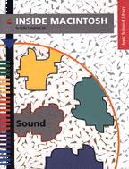

Important: Inside Macintosh: Sound is deprecated as of Mac OS X v10.5. For new audio development in Mac OS X, use Core Audio. See the Audio page in the ADC Reference Library.
Sound (deprecated)
Inside Macintosh: Sound described, for Classic Mac OS, the parts of the Macintosh system software that allowed you to manage sounds. For all new audio development, use Core Audio and QuickTime. To get started with audio development in Mac OS X, read Getting Started with Audio
Developers for Classic Mac OS used this book for information on how toIf you want to create sounds as part of QuickTime movies, you might also want to look at the book Inside Macintosh: QuickTime.
- record sounds into resources or files
- play sounds stored in resources or files
- convert written text into spoken words
- control sound production at a very low level
- produce sound asynchronously
- compress and expand audio data
- interact directly with a sound input device driver
- gain very fine control over speech production
You can also read updated documentation on Sound Manager 3.3.
This legacy book is also available in PDF format.
Book Contents
- Figures, Tables, and Listings
- Preface - About This Book
- Chapter 1 - Introduction to Sound on the Macintosh
- Chapter 2 - Sound Manager
- Chapter 3 - Sound Input Manager
- Chapter 4 - Speech Manager
- Chapter 5 - Sound Components
- Chapter 6 - Audio Components
- Glossary
- Index